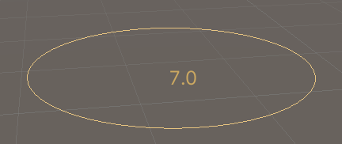

Custom 3D GUI controls and drawing in the Scene view.
Handles are the 3D controls that Unity uses to manipulate items in the Scene view. There are a number of built-in Handle GUIs, such as the familiar tools to position, scale and rotate an object via the Transform component. However, it is also possible to define your own Handle GUIs to use with custom component editors. Such GUIs can be a very useful way to edit procedurally-generated Scene content, "invisible" items and groups of related objects, such as waypoints and location markers.
You can also supplement the 3D Handle GUI in the Scene with 2D buttons and other controls overlaid on the Scene view. This is done by enclosing standard Unity GUI calls in a Handles.BeginGUI and Handles.EndGUI pair within the Editor.OnSceneGUI function. You can use HandleUtility.GUIPointToWorldRay and HandleUtility.WorldToGUIPoint to convert coordinates between 2D GUI and 3D world coordinates.
using UnityEngine; using UnityEditor; public class ExampleScript : MonoBehaviour { public float value = 7.0f; }
// A tiny custom editor for ExampleScript component [CustomEditor(typeof(ExampleScript))] public class ExampleEditor : Editor { // Custom in-scene UI for when ExampleScript // component is selected. public void OnSceneGUI() { var t = target as ExampleScript; var tr = t.transform; var pos = tr.position; // display an orange disc where the object is var color = new Color(1, 0.8f, 0.4f, 1); Handles.color = color; Handles.DrawWireDisc(pos, tr.up, 1.0f); // display object "value" in scene GUI.color = color; Handles.Label(pos, t.value.ToString("F1")); } }
.
| centerColor | Color to use for handles that represent the center of something. |
| color | Sets the color of handles. Color is a persistent state and affects any handles drawn after it is set. Use DrawingScope to set the color for a block of handles without affecting the color of other handles. |
| elementColor | The default color of objects in an Edit Mode. |
| elementPreselectionColor | Color to use to highlight an unselected object currently under the mouse pointer in a custom Edit Mode. |
| elementSelectionColor | The color of selected objects in a Edit Mode. |
| inverseMatrix | The inverse of the matrix for all handle operations. |
| lighting | Are handles lit? |
| lineThickness | Retrieves the user preference setting that controls the thickness of tool handle lines. (Read Only) |
| matrix | Matrix for all handle operations. This is used by functions in HandleUtility and Handles to transform controls. |
| preselectionColor | Color to use to highlight an unselected handle currently under the mouse pointer. |
| secondaryColor | Soft color to use for for general things. |
| selectedColor | Color to use for the currently active handle. |
| UIColliderHandleColor | Color to use for the Unity UI's padding visualization. |
| xAxisColor | Color to use for handles that manipulates the X coordinate of something. |
| yAxisColor | Color to use for handles that manipulates the Y coordinate of something. |
| zAxisColor | Color to use for handles that manipulates the Z coordinate of something. |
| zTest | zTest of the handles. |
| currentCamera | Gets or sets the camera that is currently rendering. |
| ArrowHandleCap | Draw an arrow like those used by the move tool. |
| BeginGUI | Begin a 2D GUI block inside the 3D handle GUI. |
| Button | Make a 3D Button. |
| CircleHandleCap | Draw a circle handle. Pass this into handle functions. |
| ClearCamera | Clears the camera. |
| ConeHandleCap | Draw a cone handle. Pass this into handle functions. |
| CubeHandleCap | Draw a cube handle. Pass this into handle functions. |
| CylinderHandleCap | Draw a cylinder handle. Pass this into handle functions. |
| Disc | Make a 3D disc that can be dragged with the mouse. |
| DotHandleCap | Draw a dot handle. Pass this into handle functions. |
| DrawAAConvexPolygon | Draw anti-aliased convex polygon specified with point array. |
| DrawAAPolyLine | Draw anti-aliased line specified with point array and width. |
| DrawBezier | Draw textured bezier line through start and end points with the given tangents. |
| DrawCamera | Draws a camera inside a rectangle. |
| DrawDottedLine | Draw a dotted line from p1 to p2. |
| DrawDottedLines | Draw a list of dotted line segments. |
| DrawGizmos | Draw the Gizmos for the specified camera. |
| DrawLine | Draws a line from p1 to p2. |
| DrawLines | Draw a list of line segments. |
| DrawOutline | Draws an outline around the specified GameObjects in the Scene View. |
| DrawPolyLine | Draw a line going through the list of points. |
| DrawSelectionFrame | Creates a square at a position and rotation with a specified size. |
| DrawSolidArc | Draw a circular sector (pie piece) in 3D space. |
| DrawSolidDisc | Draw a solid flat disc in 3D space. |
| DrawSolidRectangleWithOutline | Draw a solid outlined rectangle in 3D space. |
| DrawTexture3DSDF | Draws a 3D texture using Signed Distance Field rendering mode in 3D space. |
| DrawTexture3DSlice | Draws a 3D texture using Slice rendering mode in 3D space. |
| DrawTexture3DVolume | Draws a 3D texture using Volume rendering mode in 3D space. |
| DrawWireArc | Draws a circular arc in 3D space. |
| DrawWireCube | Draw a wireframe box with center and size. |
| DrawWireDisc | Draws the outline of a flat disc in 3D space. |
| EndGUI | End a 2D GUI block and get back to the 3D handle GUI. |
| FreeMoveHandle | Make an unconstrained movement handle. |
| FreeRotateHandle | Make an unconstrained rotation handle. |
| GetMainGameViewSize | Get the width and height of the main game view. |
| Label | Creates a text label for a handle that is positioned in 3D space. |
| MakeBezierPoints | Retuns an array of points to representing the bezier curve. |
| PositionHandle | Make a position handle. |
| RadiusHandle | Make a Scene view radius handle. |
| RectangleHandleCap | Draw a rectangle handle. Pass this into handle functions. |
| RotationHandle | Make a Scene view rotation handle. |
| ScaleHandle | Make a Scene view scale handle. |
| ScaleSlider | Make a directional scale slider. |
| ScaleValueHandle | Make a 3D handle that scales a single float. |
| SetCamera | Set the current camera so all Handles and Gizmos are draw with its settings. |
| ShouldRenderGizmos | Determines whether or not to draw Gizmos. |
| Slider | Make a 3D slider that moves along one axis. |
| Slider2D | Make a 3D slider that moves along a plane defined by two axes. |
| SnapToGrid | Rounds each Transform.position or Vector3 to the closest multiple of EditorSnapSettings.gridSize. |
| SnapValue | Rounds value to the closest multiple of snap if snapping is active. Note that snap can only be positive. |
| SphereHandleCap | Draw a sphere handle. Pass this into handle functions. |
| TransformHandle | Creates a transform handle. |
| CapFunction | The function to use for drawing the handle e.g. Handles.RectangleCap. |
| SizeFunction | A delegate type for getting a handle's size based on its current position. |